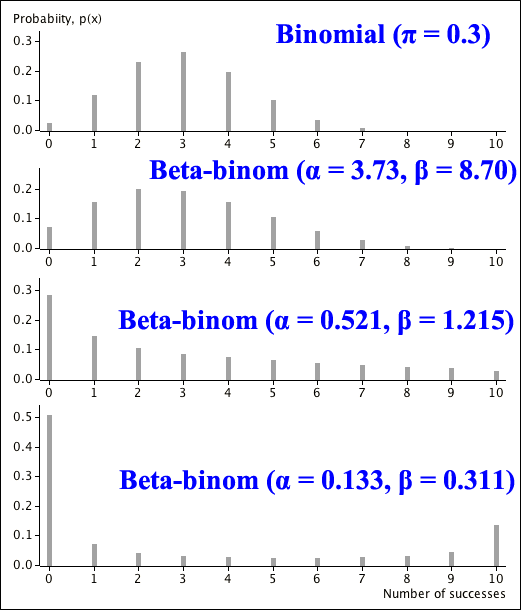

Model for overdispersion in success/failure data
A model that generalises the binomial distribution to allow for overdispersion is the beta-binomial distribution.
Definition
A random variable, \(X\), has a beta-binomial distribution if its probability function is
\[ p(x) \;\;=\;\; \begin{cases} \displaystyle {n \choose x} \frac {B(x + \alpha, n - x + \beta)}{B(\alpha, \beta)} &\text{for }x = 0, 1, 2, \dots, n \\[0.4em] 0 & \text{otherwise} \end{cases} \]where \(\alpha \gt 0\), \(\beta \gt 0\) and
\[ B(a, b) \;\;=\;\; \frac {\Gamma(a)\Gamma(b)}{\Gamma(a+b)} \]The following are given without proof:
Mean and variance
The mean and variance of the beta-binomial distribution are
\[ E[X] = \frac {n\alpha}{\alpha + \beta} \spaced{and} \Var(X) = \frac {n\alpha\beta}{(\alpha + \beta)^2}\times \frac {\alpha + \beta + n} {\alpha + \beta + 1} \]
If we write
\[ \pi = \frac {\alpha}{\alpha + \beta} \spaced{so} (1-\pi) = \frac {\beta}{\alpha + \beta} \]
then
\[ E[X] = n\pi \spaced{and} \Var(X) = n\pi (1 - \pi) \times \frac {\alpha + \beta + n} {\alpha + \beta + 1} \]
The distribution's variance is \(\frac {\alpha + \beta + n} {\alpha + \beta + 1}\) times the variance of the binomial distribution with the same mean. Since this factor is greater than 1, the beta-binomial distribution can be used as a model when there is overdispersion.
Probabilities in Excel
The following Excel functions help evaluate beta-binomial probabilities:
| Maths function | In Excel |
|---|---|
| \(\displaystyle {n \choose x}\) | =COMBIN(n, x) |
| \(\Gamma(k)\) | =EXP(GAMMALN(k)) |
Relationship to binomial distribution
The beta-binomial distribution can be made arbitrarily close to a binomial distribution with suitable choice of \(\alpha\) and \(\beta\).
Asymptotic distribution
If \(\alpha \to \infty\) and \(\beta \to \infty\) simultaneously with \(\dfrac {\alpha}{\alpha + \beta} = \pi\), the beta-binomial distribution approaches a \(\BinomDistn(n, \pi)\) distribution.
Shape of distribution
The following diagram shows a few distributions that could be used for the number of successes in \(n = 10\) success/failure trials. The top distribution is the binomial distribution.

The three beta-binomial distributions all have the same mean as the binomial distribution, but their variances are greater — they have more chance of 0 or 10 successes.